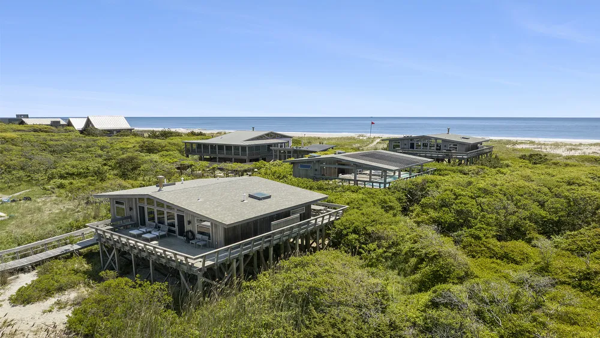
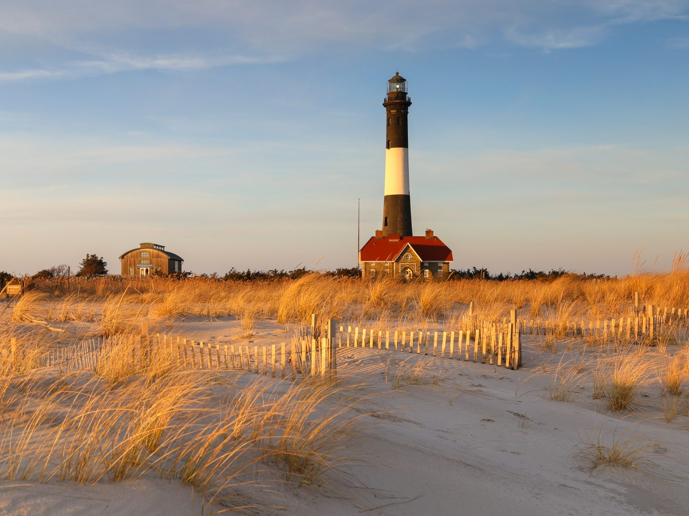
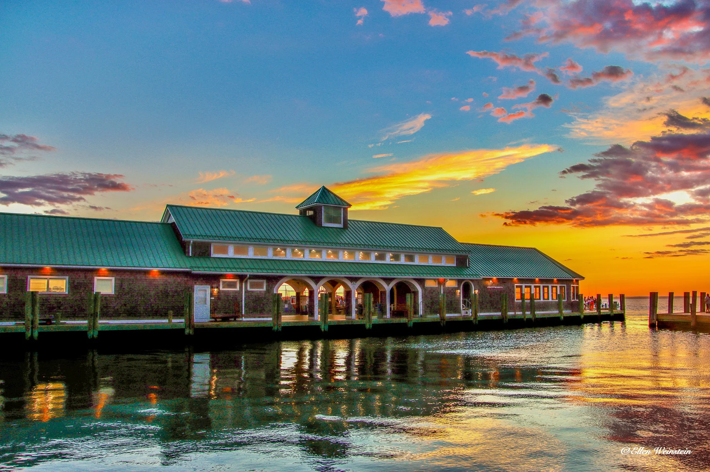

My time in Fire Island was nothing short of breath taking. The park’s long beaches and cool breeze were beyond refreshing. Walking along the beach trails was just like a modest mental reset. The blissful natural aroma from the wet sand and the lobster-red sunsets gave a stark contrast from city life – ever busy, ever crowded, often discusting.
Highlist from my trip:
- Wildlife: an abundance of birds of different types.
- Light and atmosphere: the sky was well lit, constant breezes and beatiful scenery.
- Nature trails: Trail provided a way to explore the environment without interfeering with its vegetation.
Gallery: Fire Island



Explore the Adventure
Points to note: Pack water, hicking shoes and wind breaker for cool evenings. For anyone desiring an escape with stunning scenery, simple walking trails and captivating wildlife, Fire Island is the place to visit. Plan your visit today